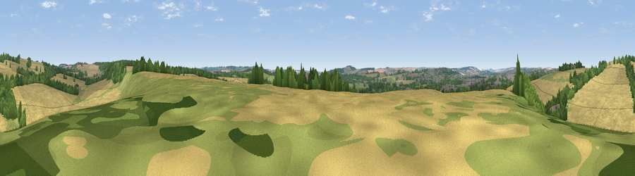

Viewpoint near Laverstock
#39955 in England · top 67% of its area beats it · near Laverstock · path 279 mWhere it is
The exact computed spot (SU 16925 29575). Click the marker for map links.
Public access: the nearest public right of way is about 279 m away — the final stretch may cross private land. Computed from Natural England's CRoW access layer and OpenStreetMap rights of way — not the legal definitive map. Always verify locally.
The view, rendered

A 360° render of this exact spot computed from the terrain model, tree cover and land cover — summer colours, afternoon light, calibrated against photographs of famous viewpoints. Real trees, hedges and buildings will differ in detail.
The panorama
Grey silhouette: terrain skyline in each direction (720 bearings, Earth curvature and refraction included). Dashed green: skyline with trees (+15 m) and buildings (+8 m) as obstacles. Blue strip: how far the ground is visible on each bearing.
Where the view opens
Wedge length = distance to the farthest visible ground on that bearing (vegetation-aware). Rings at 10, 25 and 50 km.
What fills the view
65% cropland · 17% grassland · 15% woodland · 3% built-up
Angular shares of the visible panorama (visual magnitude), not map area. Landscape diversity 0.42 (0–1 Shannon).
Key numbers
More beautiful places nearby
The staircase of upgrades: each row has a higher view potential than everything closer. Driving times are estimates from straight-line distance, calibrated against real road routing — check an actual route before setting out.
| Place | Direction | Drive | Score |
|---|---|---|---|
| Viewpoint near Alderbury | SSE · 2 km | ~4 min | 32.8 |
| Viewpoint near Laverstock | N · 2 km | ~5 min | 58.0 |
| Cockey Down | NNE · 2 km | ~6 min | 60.3 |
| Kent's Wood | ENE · 11 km | ~21 min | 60.9 |
| Hydon Hill | W · 13 km | ~23 min | 61.2 |
| Viewpoint near Bulford | N · 13 km | ~25 min | 70.3 |
| Monk's Down | WSW · 25 km | ~41 min | 74.4 |
| Viewpoint near Berwick St John | WSW · 26 km | ~42 min | 78.2 |
51.06526, -1.75984 · source: screening · position refined by local search. Computed location — check access rights before visiting.